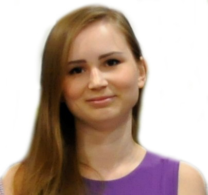
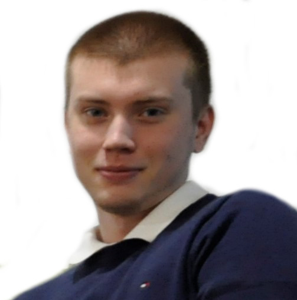
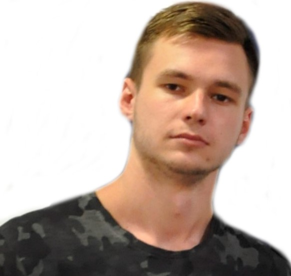
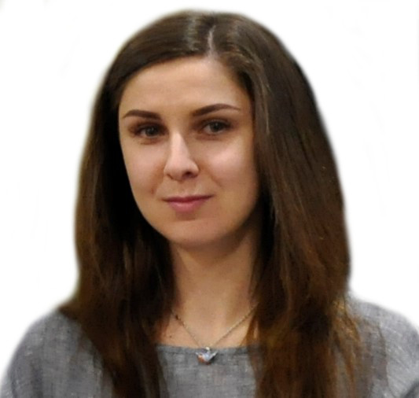

TL;DR
Docker это круто! Спасибо Вове за знакомство!
Думаю, что еЛама - это лучший старт, который у меня мог быть.
Это отличное место с очень позитивными людьми, настоящими специалистами и, конечно, ламами ❤
Владимиру спасибо за наставничество, команде за совместную работу.
Желание программировать возрасло многократно, получен бесценный опыт,
много новых знаний и приятных воспоминаний.
Вова, я очень рад, что ты стал моим первым ... Тим Лидом.
Надеюсь, даже если мой путь разойдётся с еламой, мы продолжим общаться,
ведь я всегда буду помнить, кто направил меня в нужное русло
и дал необходимый начальный толчок для дальнейшего развития в этой сфере!
Хочу поблагодарить компанию за шикарную возможность почувствовать себя в роли разработчика.
За три месяца я смог узнать много клевых, интересных вещей и набраться опыта разработки в команде. Так же хочу сказать спасибо за клевую атмосферу и море вкусных печенек))
Это был бесценный опыт для меня, и я его никогда не забуду.
Хочу сказать спасибо Вове за то, что всегда помогал нам, разжевывал даже самые тупые вопросы.
Очень интересно и доступно рассказывал новый материал.
Главное, что ты никогда не бомбил на нас (лично я бы давно уже сгорел).
Junior Lab - отличная возможность получить бесценный опыт, которого так не хватает новичкам,
а также найти наиболее интересную для себя сферу, в которой начнешь или продолжишь развиваться!
Стажировка в eLama, что немаловажно, дает ясное понимание того, как должна происходить командная работа
и рабочий процесс в IT-компании, в целом.
Владимир, тимлид JuniorLab, - замечательный, спокойный и доброжелательный,
sкомпетентный во всех вопросах преподаватель, которому можно смело задавать любые вопросы!
Он без проблем может найти правильный подход к любому стажеру и грамотно донести материал.
Огромное спасибо, eLama, за знания, опыт и будущие возможности!